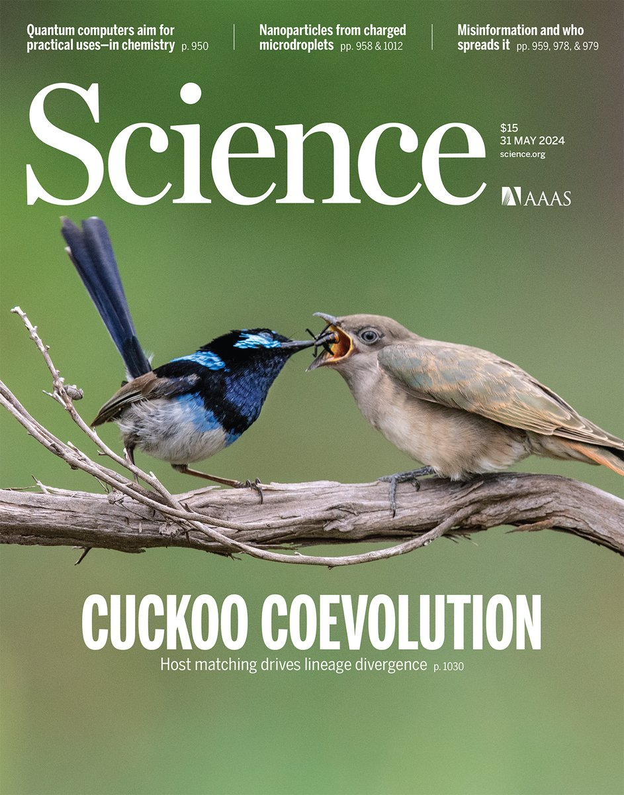
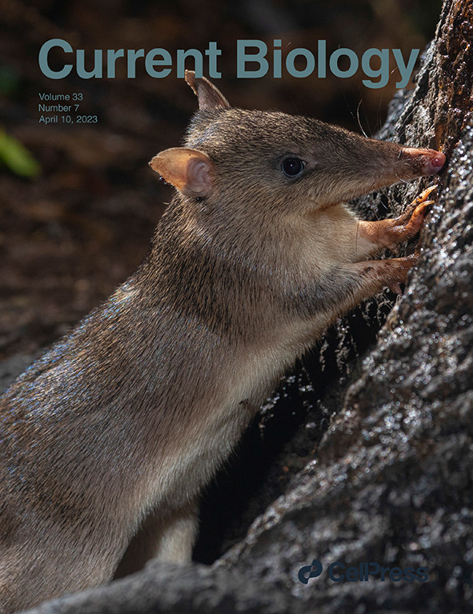

Publications
Journal articles
Skeels, A., Sauquet, H., Mast, A., Weston, P. H., Olde, P. M., Reynolds, Z. K. M., Fenker, J., Lemmon, A. R., Moriarty Lemmon, E., Cardillo, M. Sources of gene tree discordance and their implications for systematics and evolution of a megadiverse Australian plant radiation (subtribe Hakeinae, Proteaceae). Bulletin of the Society of Systematic Biologists, accepted.
Tiatragul, S., Skeels, A., Keogh, J. S. 2024. Morphological evolution and niche conservatism across a continental radiation of Australian blindsnakes. Evolution, qpae132

Moroti, M. D. T., Skeels, A., da Silva, F. R., Provete, D. B. 2024. Climate Interacts With Diversification Rate in Determining Species Richness and Trait Diversity of Tetrapods in a Global Hotspot. Journal of Biogeography, https://doi.org/10.1111/jbi.15001.
Langmore, N. E., Grealy, A. Noh, H.J., Medina, I., Skeels, A., et al. 2024. Coevolution with hosts underpins speciation in brood-parasitic cuckoos. Science. 384,1030-1036.

Keggin, T. Waldock, C., Skeels, A., Hagen O., Albouy, C., Manel, S., Pellissier, L. 2023. Diversity across organisational scale emerges through dispersal ability and speciation dynamics in tropical fish. BMC Biology. 21, 282.
Coelho, M.T.P., Barreto, E., Rangel, T.F. Diniz-Filho, J.A. F., Wüest, R. O., Bach, W. Skeels, A., et al. 2023. The geography of climate and the global patterns of species diversity. Nature 622, 537–544.
Yaxley, K. J., Skeels, A., & Foley, R. A. 2023. Global variation in the relationship between avian phylogenetic diversity and functional distance is driven by environmental context and constraints. Global Ecology and Biogeography, 32, 2122–2134.
Skeels, A. & Yaxley, Y. 2023. Functional endemism captures hotspots of unique phenotypes and restricted ranges. Ecography. e06913.
Tiatragul, S., Skeels, A., Keogh, J. S. 2023. Paleoenvironmental models for Australia and the impact of aridification on blindsnake diversification. Journal of Biogeography. 50, 1899–1913.
Skeels, A., Boschman, L., McFadden., I. M. et al. 2023. Paleoenvironments shaped the exchange of terrestrial vertebrates across Wallace’s Line. Science. 381, 86-92
Cardillo, M., Skeels, A. Dinnage, R. 2023. Priorities for conserving the world’s terrestrial mammals based on over-the-horizon extinction risk. Current Biology. 33 (7), 1381-1388. e6.

Skeels, A., Bach, W., Hagen, O., Jetz, W., Pellissier, L. 2023. Temperature-Dependent Evolutionary Speed Shapes the Evolution of Biodiversity Patterns Across Tetrapod Radiations. Systematic Biology. 72 (2), 341-356.
Pavón‐Vázquez, C. J., Brennan, I. G., Skeels, A., Keogh, J. S. 2022. Competition and geography underlie speciation and morphological evolution in Indo‐Australasian monitor lizards. Evolution. 76 (3), 476-495.
Hagen, O.*, Skeels, A.*, Onstein, R. E., Jetz, W., Pellissier, L. 2021. Earth history events shaped the evolution of uneven biodiversity across tropical moist forests. Proceedings of the National Academy of Sciences. 118 (40) e2026347118. *equal contribution
Skeels, A., Dinnage, R. Medina, I. Cardillo, M. 2021. Ecological interactions shape the evolution of flower colour in communities across a temperate biodiversity hotspot. Evolution Letters. 5 (3), 277-289.
Bromham, L., Skeels, A., Schneemann, H., Dinnage, R., Hua, X. 2021. There is little evidence that spicy food in hot countries is an adaptation to reducing infection risk. Nature Human Behaviour, 1-14.
Dinnage, R., Skeels, A. & Cardillo, M. 2020. Spatiophylogenetic modelling of extinction risk reveals evolutionary distinctiveness and brief flowering period as risk factors in a diverse hotspot plant genus. Proceedings of the Royal Society B. 287 (1926), 20192817.
Skeels, A. Esquerré, D., & Cardillo, M. 2020. Alternative pathways to diversity across ecologically distinct lizard radiations. Global Ecology and Biogeography. 29 (3), 454-469.
Skeels, A. & Cardillo, M. 2019. Equilibrium and non‐equilibrium phases in the radiation of hakea and the drivers of diversity in Mediterranean‐type ecosystems. Evolution. 73 (7) 1392-1410.

Skeels, A. & Cardillo, M. 2019. Reconstructing the Geography of Speciation from Contemporary Biodiversity Data. American Naturalist. 193 (2), 240-255.
Skeels, A. & Cardillo, M. 2017. Environmental niche conservatism explains the accumulation of species richness in Mediterranean‐hotspot plant genera. Evolution. 71 (3), 582-594.
Cardillo, M. & Skeels A. 2016. Spatial, phylogenetic, environmental and biological components of variation in extinction risk: a case study using Banksia. PLoS One. 11(5) e0154431.
Software, notes, and commentaries
O. El‐Deeb*, Skeels, A.*, & Brennan, I. 2020. Digest: The evolutionary relationship between environment and size in Australian rodents. Evolution. doi.org/10.1111/evo.13909. *equal contribution
Skeels, A. 2019. Lineages through space and time plots: visualising spatial and temporal changes in diversity. Frontiers of Biogeography. 11 (2), e42954.
General audience / explainers
Skeels, A. 2023. Why are there hopping mice in Australia but no kangaroos in Asia? It’s a long story. The Conversation.
ANU media. 2023. Here’s why you won’t find kangaroos outside of Australia. ANU media release.
Skeels, A. 2021. Competition drives flower colour evolution in a biodiversity hotspot. Explainer in Evolution Letters.
ANU media. 2021. New research could help save species from extinction. ANU media release.